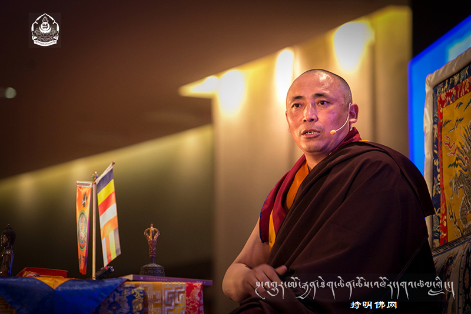

2015年第五届持明文化（上海）佛学讲座
讲座主题：自在缘于放下 我只是宇宙中的一粒微尘
以慧眼看世界 别再让幸福与你擦肩而过

日增嘎瓦上师讲座开示：
大家好，今天能有这么多人聚集在这里，共修作明佛母荟供，是一个非常殊胜的机缘。这次法会能够圆满举行，上海胜利幢的组长们和参与筹备工作的所有人员，投入了很多的时间和精力，就是为了给大家增加福报智慧，从而让我们的人生变得更有价值。
我们做任何事情前都要有一个发心，今天参加如此殊胜的法会，该有怎样的发心呢？首先，是为了一切众生解脱成佛，获得永恒的幸福。其次，是为了亲朋好友祈福，让他们增加福报、健康长寿，同时替他们忏悔业障。今天的会场布置得非常庄严，还供养了这么多的鲜花，大家可以观想，自己带着累世的父母有情，把眼前的一切美好景象，在心里做意幻供养，供养十方三世一切诸佛菩萨。这样的发心，令你今天参加法会所获得的功德，等同于你亲自举办了这场大型法会的功德。由此可见发心的重要，所以请大家调整发心。希望大家能够专心地听闻佛法、念诵经文，这些经文大多是藏文的译音，在座的很多人没有念过，尽量跟着念诵，或看一下汉文的译意也可以。哪怕只是用心地听，也会在你的心里种下一个善根，帮助你积累福慧、增加慈悲。这次法会，一定会给你带来不同的内心感受，甚至带来前所未有的改变，也许会让你从此对人生有了新的认识和发现，所以从现在开始，大家无论听懂与否、会念与否，只要专心地听、专心地念，就会获得巨大的利益。接下来，我们一起念诵前行仪轨，因为做任何事，我们都希望有美好吉祥的开始，这样才能有圆满的结果。修行也是如此，前行仪轨里就包含了祈愿吉祥、祝福的经文。
念诵前行仪轨（略）
刚才大家念得非常整齐，这里大多都是长期参加共修的弟子，经文念得非常熟练，只有少数人是第一次参加，对经文比较陌生，但你们能够参加这么殊胜的活动，一定是与佛法很有缘份，法会对每个人来说都是非常有意义的。今天你们都得到了关于佛法的书和光盘，有时间可以学习一下，了解佛法究竟能够带来什么。
现在有越来越多的人明白佛教并非迷信，认可学佛是好事，能让人更平和、更宽容、更善良。如今，佛法被公认是一种高尚的教育，是人类最终极的智慧。释迦牟尼佛宣讲的佛法，告诉我们生命的真相，让我们的人生更有目标、更有价值。
大多数人都认为今生快乐就够了，以后的事情就跟我没有关系了，实际上这是非常短视的错误观念，在这个世界上，每时每刻轮回都在发生，有很多人可以回忆自己的前世，这并不足为奇，只是我们不了解而已，轮回是真实存在的。
释迦牟尼佛最初也是一个普通人，当他看到人生之苦，而轮回又是那么漫长，他开始思考如何改变这一切，于是，他以修行去寻找智慧，最终获得了成就。释迦摩尼佛将所发现的真相告诉我们，就是佛法。就像一个科学家发现了人类不曾了知的事物，然后把他的发现告诉我们，是一样的道理。很多人不信佛，是因为他们从来没有认真研究过。可是世上我们不知道的事太多了，如果只凭自己的感官来认知世界，而感官以外的全都否认，那就太局限甚至欺骗自己了，会让我们与永恒的幸福擦肩而过的，所以我们需要通过佛教的世界观、价值观，改变我们的内心，提高我们的智慧。
在这个科技高速发展的时代，我们在物质方面可以说应有尽有，却忽略了精神世界的建设，大多数人认为只要拥有财富和权力，就一定会得到幸福，但是有很多人，虽然拥有足够的财富和权力，只是贪图自己享乐，根本不顾及别人的痛苦，变得越来越自私自利，精神上也觉得空虚无聊，这是因为他不懂得人生的真相和价值。而有信仰、相信因果轮回的人，绝对不会有这样的想法，他们懂得人生宝贵，不会虚度光阴、造做恶业、欺害众生。因为学佛，他们树立了正确的人生观，立志做有人格魅力和开心的人，并令他人欢喜。请扪心自问，今天我们拥有的相当丰富，过着天人一样的生活，但是大家感觉到幸福和知足吗？为什么没有呢？就是因为我们内心的世界没有构建，所以我们找不到幸福感。
每个人都想得到幸福快乐，但大多数人没有找到，那么应该去哪里寻找呢？我告诉大家，一定要从佛法里寻找！以佛教的世界观和人生观去调整自己的内心，你一定会有意想不到的收获。很多人认为此生结束时，像断电一样，一片漆黑，一切就都结束了，这是错误的认知。那么生命的真相到底是什么呢？轮回真的存在吗？还是仅有这一世的生命？这些问题我们不能不去思考，否则就会错过很多最最重要的准备。
我想人们都认同生命是最宝贵的，所以买了各种保险，以备不时之需，虽然明知十有八九用不上，但这会帮助获得内心的安全感。的确，人生无常，我们无法预测未来，所以买份保险也是对的。但是，又有多少人考虑过为来生买份保险呢？恐怕寥寥无几吧！而这份保险又是什么呢？就是学佛，当生命开始了下一段旅程的时候，这份保险比今生我们所买到的任何保险都要重要得多，佛告诉我们，人的这一世结束后，将要面对六道的选择，如果没有充分的准备，我的生命将会延伸到畜生道、饿鬼道、地狱道、人道、天道、阿修罗道，释迦摩尼佛告诉我们这六种生命存在的真相，他们分别会有什么样的感受，生命多久轮回一次，他们所在的世界是什么样的，这些在佛经里面都讲得很清楚。
生命如此难得，在生生世世的轮回之中，我们今天有幸遇到了佛法，拥有健康的身体，生活在和平的环境里，这一定是我们前世种下的善因所带来的善果。我们现在一切都顺心如意，这是研究佛法的最好时机。人和畜生道最大的区别就是，畜生道的动物除了吃喝，别无他求，但人类不同，当我们的物质需求得到满足后，一些有思想的人开始思考心灵层次的问题，通过学习佛法提高智慧，让内心更加充实，如果我们现在对生命的真相不闻不问，恐怕将来无常来临时会措手不及。大家要明白这一世能够遇到佛法是非常幸运的！
如果大家去研究一下佛法中关于因果不虚、轮回过患的讲解，就会知道今天的因果是怎么产生的？汉地有句俗话：种瓜得瓜，种豆得豆。同样道理，我们今天种善因，明天就会得善果，种恶因，必将得恶果。大家想想自己今生做的善业多？还是恶业多？从小到大曾经杀掉、吃掉那么多的生命，然而曾做过多少布施？积累过多少功德呢？现在很多人已经拥有很多的财富，但还是不够满足，继续造各种恶业，如果不改变自己，不去播种善因种子，当果报来临时，财富不会有任何帮助的，这个我们常可看到，比如在医院里有许多得了怪病的人，无论有多少钱也无法医治。还有就是当遇到天灾瘟疫的时候，一瞬间生命就没了，在因果面前，人人都是平等的，这个时候，唯一对我们有帮助的，就是你平时所种的善因。在生命结束的那一刻，只有我们今生所做的善业和恶业，会如影随形跟着我们走，此外，任何东西我们都带不走的，包括我们最执着的身体，在那一瞬间就和我们再没有关系了。
人身是多么难得，而失去人身又是那么容易。很多人认为自己现在身体健康，事事顺利，不需要去信佛，没什么可求的，所以不需要皈依。当然佛法并不是为了求什么，我们不排除有些人学佛是为了求健康长寿和福报，这是人天乘，是学佛当中很表面化、很低层次的一种境界。学佛有高、中、低三个层次，只有通过不断学习才能逐步提高，所以希望大家对自己的生命负责，为了让自己的生命将来有一个更好的开始，应该马上学佛。今生信佛、学佛，做一个相信因果的人，会播种很多的善因，少做很多的恶业，将来也必定收获善果。既然学佛对我们有百利而无一害，是不是应该认真地研究一下？
我们今天能够得到这样的人身，来到这里听法，这个善缘是怎么获得的呢？佛经里说，得到人身要具备三个条件，第一，要做善法。第二，要受戒。比如说不杀生、不骗人等等。戒律就如同法律一样，告诉我们什么可以做，什么不可以做，别的宗教也有戒律，佛法不让做的事情，都是对我们有害的、给别人带来痛苦的，比如杀生，对其他生命是不公平的，生命再微小、再脆弱，对它们来说是相当的宝贵，它们跟我们一样，有对死亡的恐惧，所以我们不能伤害它们，这就是受戒。第三，发愿今生成佛、成菩萨、成阿罗汉，最低层次的发愿，也要是生生世世做人，有了这样的愿望，才能来到这个世界。
佛经里讲“人身难得”，到底是什么意思？人身真的这么难得吗？其实，并不是所有的人身都很难得，是有智慧、慈悲心、能够利益他人、对自己的人生能够自律，这样的人身才是非常难得的。在这个世界上，也有一种人，生来就开始造恶业，虽然都是人，但是人和人的命运、福报不同，这就是我们前世种的因不同而造成的，这种人就算来到这个世界，也不能获得解脱，不能利益众生，更不能成佛，那这样的人身，是没有价值的。
如果我们能够把拥有的财富和智慧，用于利益众生，人生也因此有了意义，那么你的财富和权力越多越好，可以做更多的善业，现在有很多慈善家、高僧大德、乐于利益众生的居士，还有一些虽然没有信仰，但也在做善业、投身公益活动的人，这样的人身才是难得的。但是大多数人不懂得如何运用财富权力，造了很多的恶业，不仅毁掉今生，也毁掉了来世，现在很多人因为太有钱有权又有闲，百无聊赖，便开始去寻找内心的安慰和刺激，整天赌博、吸毒等，造各种恶业。我们每天在新闻上都能看到，有很多人现世因果成熟，这就是没有智慧的结果，他们不但毁掉了今生来世，还要为这一辈子所做的恶业，偿还果报，也许几千年、几万年都要受这样的痛苦，这是多么可怕的事情！
下面我简单介绍一下，佛教里关于六道众生是怎么产生的。为什么会有地狱？是因为人们所造的杀盗淫妄酒等各种恶业所致的，如果没有杀生，没有造恶业的人，就不会有地狱的存在。为什么有畜生道？是因为这个世界上有很多愚痴无明的人，虽然拥有很多的物质财富，但完全不相信真理，认为只要有财富名利，就达到了人生最高的境界，这就是畜生道的因。为什么会有饿鬼道？是因为人们虽然拥有财富，但吝啬贪婪，不舍得布施，这就是饿鬼道的因。为什么会有阿修罗道？因为在这个世界上，天天都在发生战争，有很多人喜欢研制各种武器和毒气，然后用于发动战争，伤害众生，因此就产生了阿修罗道。为什么会有天道？是因为有些人特别有福报，也喜欢行善，但贪恋五欲享受，对解脱成佛毫无兴趣，这就是天道的因。人道的因前面讲过了，不再重复了。因为众生有不同行为的存在，就有了六种生命世界的存在，这也是因果规律。这就好比，因为有人不遵守法律，做伤害别人、危害社会的事情，所以就有了监狱的存在一样。因此，我们要断恶向善，这是非常重要的，今天已经有了这么好的机缘，可以断除恶业，在成佛的路上寻找永恒的幸福，大家要珍惜这样的缘分。
每个人都想健康长寿，可是这一辈子到底哪一天结束，我们究竟能活多久，谁也无法预知，就连明天或者下个月将要发生的事情，我们都无法得知，更何况我们的寿命。观察一下周围的家人、朋友和同事，一定有人突然得了不治之症，或者一场意外事故，人生就此结束了，开始了另一段生命旅程。要知道，生命是延续不断的，在这个轮回的过程中，如果没有积德向善的因，结果会是相当悲惨的！所以一定要把握这一生学佛的机会，如果错过了，很难说何时再有这样的机缘。我今天反复强调这些，就是希望大家明白学佛的好处，生起智慧，明辨取舍。如果一个家庭、一个单位、一座城市，是由一群善良的、有道德的人组成，那么，这个家庭、这个单位、这个城市一定会充满了爱，大家会无条件地相互帮助，利益众生，如果每个人都有这样的心态，人生该多么有意义，这个世界该多么美好啊！
如果我们忙忙碌碌一辈子，每天从早忙到晚，所做的事情都一模一样的，就这样一个月过去了，两个月过去了，一年过去了，而且很多事情是你不愿意做的、也不喜欢做的，但是你别无选择，被时代的压力推动着前行，同时欲望不断地膨胀，不知不觉中你的生活就没有规律了，不知不觉中你身体就亚健康了，你不知不觉时间都溜走了，最后这一辈子也没做什么有价值的事情，这样的人生多么遗憾啊？本来我们有机会成佛，达到菩萨那样的见解，度过世上最完美的人生，但是由于智慧不够，与这样的机缘失之交臂。
当今时代，大家会看到，有很多拥有财富名利、有思想深度的人，都是信佛的，都在行善，他们懂得物质解决不了所有的问题，所以开始寻找内心的健康，身体健康是一切的基础，锻炼身体是为了身体健康，而锻炼内心的智慧是为了内心健康，实际上是内心的健康比身体健康更重要，身体健康而心不健康的人相当多啊，他们要么想法稀奇古怪，要么思想颠倒，要么一生没有研究任何有意义的东西。所以我们要调整内心，才能找到幸福，因为内心调整后，会断除痛苦和烦恼；内心改变后，会感到自在和放松。我想，没人喜欢压力和焦躁吧？都向往轻松自在、生死自由。但是如果没有去训练我们的心、建设精神世界、调整内心，就找不到内心的归宿，我们更不会发生任何向好的改变，只能会越来越感到空虚无聊。很多人都是一种得过且过、昏昏度日的状态，我以前遇到这种人，就会告诉他，生命其实是很有价值的，你一定要开始学佛，去帮助别人，多做善法，这样你的朋友会越来越多，周围会遇到越来越多的善人，思想积极健康的人，因为你心的变化了，你的环境就会发生改变的。我们每天开心与否，满意与否，一切的改变都是和心有直接关系的，而外在的一切只有一部分对我有帮助。所以调整内心是最重要的，平常打坐观想、念诵佛号、参加放生、诵读佛经、朝拜佛教四大名山等等，都可以让心归于平静。
这几年很多人喜欢去西藏旅游，他们回来之后便开始信佛了，为什么呢？因为强烈的反差冲击了他们的心灵，让他们开始思考什么才是快乐的人生。在西藏，他们看到环境那么纯净，没有污染，人们的生活简单却又快乐，对佛法非常虔诚，当他们习惯了西藏的蓝天白云，再回到城市的时候，有点不适应，感到处处充满着压力，人与人之间缺乏信任，人们就像机器一样，一刻也停不下来，被各种欲望所驭使着。佛经里讲，只有断除欲望，才能得到真正的快乐，怎样才能断除欲望呢？就要调整自己的内心，就像喝水可以解渴，可是如果喝盐水，就会越喝越渴，佛法就是水，可以滋养我们，而欲望则是盐水，会越来越增长我们的贪心，当我们一心越追求物质和权力，会让我们的生活越来越忙，心也越来越不自在。
所以，我们的生活以及想法不妨简单一点，这也是一种修出离心的方法。什么是出离心？不要误以为是出家、不上班、不做事业。实际上，你完全可以适度地追求财富、追求时尚，这无可厚非，但如果完全是把人生的目标锁定在对财富的追逐上，那就错了！这样会让我们陷入永无止境的追求中，贪欲是永远无法满足的，因此我们会变得越来越不开心，可能到最后因为一点点小事就会想不开，甚至自杀了。现在患抑郁症的人相当多。他们并非因为缺衣少食，才患上抑郁症的，而是内心承受能力太差了，因为拥有的太多、而且一路顺风顺水，反而很小的挫折都无法承受，甚至最后会选择自杀来结束人生，这多么遗憾啊！所以我一直劝大家学会知足少欲，修出离心。
我们要去研究并学习佛的见解、佛的宽容、佛的世界观，那再多的财富，再大的权力，都不会影响我们学佛解脱，反而凭着财富和权力，我们可以去帮助更多的人，做更有意义的事。人生其实稍纵即逝，如果不好好利用，很容易碌碌无为地虚度此生，最后你的一场存在并没有带来太大的价值和意义。大家想想嘛，从小到大你们学了很多的知识：天文地理、物理化学、历史政治……，但是，最最重要的事情却从来没有研究：我的生命是从哪里来的，到哪里去？由于从未研究，所以我们轻率地选择不去相信“善有善报，恶有恶报”，不去相信很多关于生命的真相和宇宙的真理。假使我们知道生命的规律，那一定会断恶向善。所以希望大家多多听闻佛法、思维佛法、修持佛法，这对我们的一生至关重要。
我们今生作为佛的弟子，需要做到如下三点，人生才算圆满：第一，对上师具足信心，对诸佛菩萨具足信心；第二，具足慈悲心，即帮助别人的心；第三，深信因果不虚。希望大家时刻铭记这三点，并随时参照以调整自心，这样我们的世界观就会逐渐发生变化。大部分人学佛之前有嗔心、傲慢心、贪心，不知足、不快乐，后来跟随上师学习佛法，学习慈悲，帮助别人，相信因果，相信轮回，从而人生发生改变。
因果是什么？是自然规律，而不信因果的人，就相当于不信自然规律。因果并非佛创立的，释迦牟尼佛没有来到这个世界的时候，因果早已存在，佛只是觉醒者，他看清楚了因果规律，并告诉了我们这一真相。这个世界上，万事万物都有一个规律：即有因有果，所以我们相信因果，就等于相信自然规律。真正的佛教徒绝对不会去相信这个世界是由谁创造的。如果你是个喜欢研究的人，那就请研究因果规律吧，这是最有帮助的！相信因果，会提高道德、提高爱心、提高素质、提高智慧！
为什么我们有时候会感到迷茫？为什么有些事我们束手无策？就是因为我们的智慧不够。我们今天所有的知识，都是从小到大一点一滴地学来的，而并非天生就会的。学习佛法的智慧也同样，需要一点一滴、脚踏实地地去听闻学习，逐渐培养正确的人生观，那我们的生命会变得越来越有价值。我们会远离那些毫无意义的事情，同时远离了那些会令自己烦恼痛苦的根源。而最终我们会收获高深的智慧、高深的思想、高深的目标，从而我们就会找到永恒的幸福，令今生来世都真正快乐！
今天由于时间所限，我无法跟大家讲太高深的道理，只能简单地告诉大家学佛的价值，希望今天我所讲的，对你们今后的生活有一定的帮助。大家利用今天的机会，了解一下佛教的世界观，明白为什么要学佛。
学佛并不是烧香拜佛，而是学习佛的慈悲与智慧。逢年过节大家可以看到成千上万的人去排队烧高香，求健康长寿、求升官发财。我们并不否认这会有一定的帮助，但是我们真正应该求的是无上的智慧、求永远的幸福，求究竟的解脱！此生再大的权力、再多的财富，最终真能带来幸福吗？能带来轻松自在吗？很多人已经拥有财富名利，却没有感到幸福，这就是因为没有智慧，没有精神世界的建设，缺乏对生命真相的研究！
接下来，我们一起念一段经文，大家面前都有法本，今天我们共修作明佛母的荟供。荟供可以帮助我们积累福报、提升慈悲、增长智慧，同时可以忏悔往昔所造的各种恶业。大家都想要平安、福报、健康、顺利，那就要通过诵经持咒、观想打坐、行持善法、积累功德来实现。而今天的共修，是一种特殊的方法，叫荟供，是莲花生大师为密宗四众弟子积累福报，忏悔业障而传授的修法，能以最快的速度实现上述目的。
在正式修诵荟供之前，希望大家今天在这里发一个清净的愿。最好发一个大的愿望，例如，愿我早日皈依佛门，或者我过两三年再皈依佛门，或者祈请佛菩萨加持，断除我所做的各种恶业，或者我今后不再杀生，或者我再也不吃某一种动物的肉（如果所有的肉食都不吃我做不到，那么选一两种我本来就不喜欢吃的，或者根本就没机会吃到的，发愿永远不吃这几种动物的肉），这就叫受戒，在今天这样殊胜的对境，在诸佛菩萨面前祈祷发愿，你的愿望一定会实现的。也可以发愿家人健康长寿，为他们做功德积累福报，清净所有罪业。我们从小到大，父母为了把我们养大而造做了很多的恶业，比如杀生等等，如何回报他们的恩德呢？如果父母年事已高，现在给他们买很多吃穿用具，也许他们已经无法享用了。我们今天积德向善，回向给他们，一定会对他们更有帮助。如果你还在吸烟喝酒，可以发愿戒烟戒酒，时限可以设定一年或两年，这也叫受戒。
如果此生我们成不了佛，成不了菩萨，成不了阿罗汉，来世也最起码要投生为人，别忘了刚才讲过的三个获得人身的条件：足够的善业功德、受一个戒、有愿望生生世世成佛、成菩萨，或者至少当人。发这样的愿，就相当于播下一颗种子，有因才能有果。比如，农民种庄稼，需要播种种子才会开花结果，善法也一样，要种善因，才会得善果。
总之，希望我们一会儿念诵经文时，大家内心发这类清净的愿，在座的所有皈依弟子，你们要发愿生生世世跟随上师，度化众生，今天所做的功德回向一切众生成佛。在今天这么殊胜的法会上，我们的一切善愿都会实现的。不过，大家在念诵的过程中，一定要关照自己的心，因为一切唯心造，心是万能的，一切会随着心而改变。所以希望大家尽量珍惜这一个下午的时间，专心念诵，关照自心，不要胡思乱想很多世间八法。荟供中间还会给大家发一些甘露，什么是甘露呢？就是给大家一些经佛菩萨加持过的食品，大家吃了之后会获得吉祥，增长福报，清净业障，提升智慧，所以请大家专心念诵。
会供念诵（略）
今天的荟供非常圆满，接下来我再给大家说一下回向。我们做任何善法，诵经持咒，放生荟供等，如果希望为自己及他人带来帮助，那就必须做回向。什么是回向呢？就是将自己所做的善业功德分享给别人的意思。大家都懂得“付出才有回报”，当我们给予别人慈悲、智慧，或救度生命，那得来的果报，将是慈悲智慧、健康长寿，所以回向就是回转的意思，先有付出、给予，然后才会得到回报。每次做善法，都要回向，这非常重要。如果供一盏灯，烧一支香，放一次生，念一次经，都做回向，就会成为我们成佛的因，解脱的因，或者阿罗汉的因，至少也是人天乘的因。回向的意义，相当于将我们所做的善根保存到我们的善业银行里。如果没有保存，一旦自己生起一念嗔心，或者遇到其它违缘，在这些善根还没有来得及帮助我们，或者只帮助了一点点的时候，就功亏一篑、前功尽弃。而以菩提心为前提回向的善根，就永远都不会毁掉，无论遇到什么样的违缘，永远都会帮助我们趋往解脱。
一会儿大家念诵《普贤行愿品》回向的时候，心里要想着今天所做的善法给予谁，这样我们的功德才会持续增加，如果吝啬不舍得给予别人，就仅仅是做了一个善事而已。比如说，有些人行很多善，但不信因果，或者不信行善会有功德，那他们得到的最多也只能是很低层次的果报：一点点健康，一点点财富。可能有人会说，除了健康财富，我并别无他求，但请别忘了，有些事并非求了就能得到的。但是，如果我们设立一个更高的目标，比如成佛，那健康长寿、福报智慧，便会自然而然不求自得。所以我们做任何事，一个崇高的发心和愿望至关重要。
今天在座的人都拿到了一本我写的书，《除惑慧光》，书中我讲了很多这些道理，希望大家认真学习一下。我相信大家绝大多数都是信佛的人，否则今天不会来这里的，既然信佛，就要信得更正规、更如法、更专业，这样，你每诵一部经、放一次生、做一件善事，都会带来更圆满的果报，这是相当关键的。我们要加强闻、思、修，才能明白这些道理。
在此顺便简单地讲一下皈依，皈依佛法僧三宝是什么意思呢？皈依佛，不皈依天魔外道；皈依法，不杀众生性命；皈依僧，不亲近外道邪师。重点前两条能做到，就可以皈依了。所以我下面着重讲一下这两点。
首先，皈依佛，不再信其他的宗教，至于藏传佛教、汉传佛教、南传佛教，本质上都是释迦牟尼佛的教法，只不过层次和传承上有所不同。我们属于藏传佛教，也叫密宗。所有教派的核心是相同的：诸恶莫做，众善奉行，自净其意，是诸佛教。这就好比我们入的学校虽然不同，但教材是相同的，只不过教学方法略有不同。又好比，我们去某一个地方，可以坐飞机、坐火车、坐汽车，但殊途同归。几个教派当中，可能南传佛教的发心是为自己脱离轮回，最高的目标是阿罗汉，主张“自觉自利”。而汉传和藏传都属于大乘佛教，大乘的发心是为一切有情众生解脱成就，主张“自觉觉他”、“自利利他”。而金刚乘的发心则是为让一切众生早日成佛而成佛，以“普度众生”为己任，甚至要求“自未度先度他”。至于更高层次的空性境界，可能更深奥了，今天即使讲大家也不一定理解。总之，信佛，不管是信藏传佛教，还是汉传佛教，都是一样的，比如你们去藏传佛教的寺庙里去拜佛，和去汉传佛教的寺庙里去拜佛，是没有区别的，全世界释迦牟尼佛是同一个，观音菩萨是同一个，文殊菩萨也是同一个。
今天在西方信佛的人越来越多，藏传佛教很多的高僧大德在西方弘扬佛法是相当成功的。因为西方的人喜欢研究一些超越智慧的东西，所以他们很喜欢探究一些未知的领域，包括更高层次的思想领域，当得知世界并非由谁创造的，而每个众生都有机会成佛，有些原本有其他信仰的人便开始皈依学佛，因此在西方藏传佛教非常兴盛。在中国，有些人信得太多，什么都信，尤其是一些神秘鬼神的事。还有一些人，什么都不相信，只相信自己的想法和感官，相信自己看得到、摸得到的东西。可是，请问：看不到，摸不到的高科技你为什么选择相信呢？所以不能因为没有研究，就不相信。如果你用心去研究，定会发现很多前所未知的秘密，会了解到一些真理的。
皈依佛，就是要去学佛的智慧。无论皈依哪一教派，都是佛的弟子，读的佛经都是释迦牟尼佛传下来的，佛有八万四千法门，相当于小学、中学、大学课程的差别。很多人说，我现在学显宗，不学密宗，或者说我学密宗，不学显宗。这都是搞错了，而应该是按小学、中学、大学的次第来学，不可能直接就上大学，也不可能只学小学就想学到全部。学密宗也学净土法门，也学小乘法门的，然后再高的就是禅宗，禅宗最高的见解就是密法的见解，显宗里有金刚乘，显宗里有禅宗，和密法很多地方是相通的。
皈依法，要做到不杀生，为什么？因为杀生是一切罪业里最顶级的恶业。杀害别人是最能引起别人巨大痛苦的，其他的伤害都是没有夺取生命这么严重，所以这是最为严重的罪过。所以皈依的人，是不能杀生的，而要尽量去保护所有的生命。当然我们无意中还是会杀生，比如开车走路，都会伤害到其他生命，这是无法避免的。可是，如果为了我吃某个动物，然后去杀生，真的是很有罪过的，希望大家，无论你信佛与否，皈依与否，都不重要，重要的是不要杀生！罪过永远是罪过，善业永远是善业，这是谁也改变不了的，更不会因你信或不信而改变。很多人认为，皈依佛以后，规矩太多了，要求太多了，不敢皈依学佛，这简直是掩耳盗铃！好比你开车，不会因为你不懂交规，闯了红灯就不被罚，也不会因为你不懂法律，违法了就可以不被判刑。
如果我们对佛法僧三宝具足信心，然后我们尽量不去杀生，而万一不小心杀生了，可以忏悔。如果事先知道杀生有过患，相信有因有果，对我们的行为会产生非常有利的指导和约束，否则，我们这一辈子会吃各种各样的肉，杀害各种各样的动物，天上飞的、地上跑的、水里游的，都不放过，其实人根本不需要吃这么多品种的食物啊！
特别是今天在座的有一些家长，一定要注意，不要让自己的孩子杀太多的生，不要轻信那些所谓的专家，说某种动物有什么样的营养、每天要吃多少才算足够等等，想想我们今天这个年龄，都没有吃过那么多东西，身体不是很健康嘛！为什么现在的小孩要吃这么多的众生肉呢？而且大多数都是活生生杀死的，每天吃多少鱼，多少虾，多少贝类？大家一定不要这么做啊！如果想让孩子将来有福报智慧、健康长寿，那就不要因为你自己缺乏智慧，而让他造恶业，消耗他的福报！本来他很有福报，生在你家，一切应有尽有，一生本应很幸运的，但是因为你给他吃了这么多生命，消损了他的福报，最终他是要偿还这些果报的。
如果实在无法做到不吃肉，可以吃三净肉，即眼不见杀、耳不闻杀、不为己所杀。不过最好少吃肉，这对健康更有好处。现在还有很多书倡导吃素，有些并不是佛教徒写的，而是营养学家写的，书中专门讲吃素食的好处，肉食吃得太多对身体不健康。现在人们非常注重健康养生，所以建议你们多去学习一下，信不信佛没关系，了解这些道理，能让自己少走很多弯路，少做很多恶业，否则将来这些肉食吃得太多而产生疾病，那时候再去忏悔，恐怕为时已晚。所以希望大家尽量少杀生取食！
总之，上述两个是皈依的最基本要求：一不皈依天魔外道、二不杀生，能做到的话就随时可以皈依。很多人会问皈依以后需要做些什么？要念一些佛号、咒语，可以慢慢学，逐渐成为正规的佛教徒，成为真正的释迦牟尼佛的弟子，这样，你的慈悲心增长得更快，你的福报来得更快，所以希望大家要开始正规学佛，能皈依最好，如果暂时做不到皈依，那也是按照这个标准尽量去靠拢，对自己会很有帮助，这也是今天跟大家说的非常重要的一件事。
另外，希望在座的人，今后长期坚持参加放生，上海胜利幢放生组的组员，一定是每月参加放生的人，否则不会来到这里，也不会见到我，更不会这么幸运地能参加这个殊胜的法会。放生是真的很有意义，我们从小到大，由于无明造了很多的恶业，包括杀生，而放生是一种忏悔和偿还，可以为我以前杀害的生命做回向，让它们不要再堕入畜生道，我们的回向对它们一定是有帮助的，所以希望大家尽量参加放生，这是我今天最大的愿望。
一会儿我念三遍金刚七句，这是莲花生大师的祈请文，我念的过程中，你们每人发一个清净的愿，金刚乘的弟子，发愿跟随上师生生世世利益众生，大家发菩提心。没有皈依的信众，我前面讲了这么多的发心发愿，选一个两个能做到，或者过一两年能做到的，发一个愿，这对你们一定最有帮助！
上师念诵金刚七句（略）
很好，大家很虔诚地祈祷，接下来，我们一起念诵普贤行愿品做回向。
普贤行愿品念诵（略）
最后，再次感谢所有的工作人员，特别感谢上海的组长们，无条件为了大家能够筹办这样的一个法会，就是希望大家能有个很好的学习机会，还有酒店的工作人员，再一次感谢你们！最后祝福今天在座所有的人，一切吉祥如意！